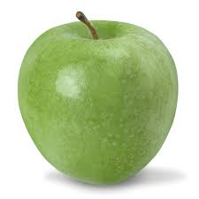
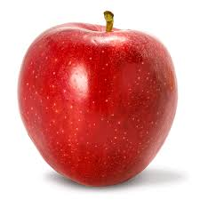
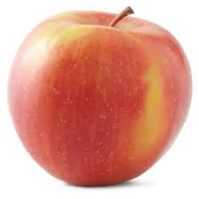

Bilpin Fresh Apple
Products of the Bilpin

Pink Lady
Cripps Pink is a cultivar of apple.
It is one of several cultivars from which apples
that meet quality standards can be sold under the trade mark
name Pink Lady. Cripps Pink was originally bred by John Cripps
at the (then named) Western Australia Department of Agriculture by
crossing the Australian apple Lady Williams with a Golden Delicious to
combine the firm long-storing property of Lady Williams with the
sweetness and lack of storage scald of Golden Delicious.
$6 per kilo

Red Delicious
The Red Delicious is a clone of apple cultigen,
now comprising more than 50 cultivars,
recognized in Madison County, Iowa, in 1880.The 'Red Delicious'
originated at an orchard in 1880 as "a round,
blushed yellow fruit of surpassing sweetness"
$5 per kilo

Granny Smith
The Granny Smith is a tip-bearing apple cultivar,
which originated in Australia in 1868. It is named after Maria Ann Smith,
who propagated the cultivar from a chance seedling.
The tree is thought to be a hybrid of Malus sylvestris,
the European wild apple, with the domestic apple M. pumila as the polleniser.
The fruit has hard, light green skin and a crisp, juicy flesh.
$3 per kilo

Gala
Gala is a clonally propagated apple cultivar with a
mild and sweet flavor.
Gala apples ranked at number 2 in 2006 on the Australia Apple Association's list of
most popular apples, after Red Delicious and before Golden Delicious, Granny Smith,
and Fuji (in order). The skin color of the fruit is non-uniform.
$3 per kilo

Fuji
The Fuji apple is an apple hybrid developed by growers
at Tohoku Research Station in Fujisaki,Japan,
in the late 1930s, and brought to market in 1962. It originated as a cross
between two American apple varieties —
the Red Delicious and old Virginia Ralls Genet
(sometimes cited as "Rawls Jennet") apples.
$8 per kilo